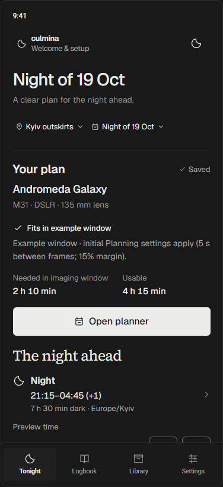
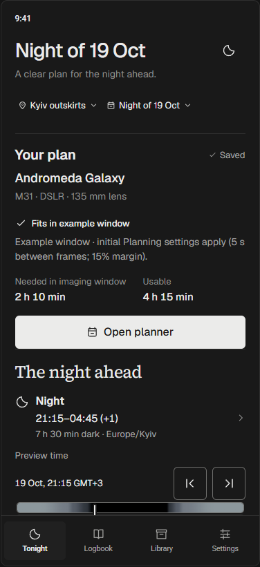
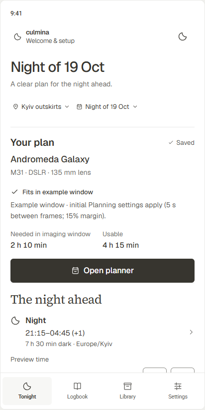
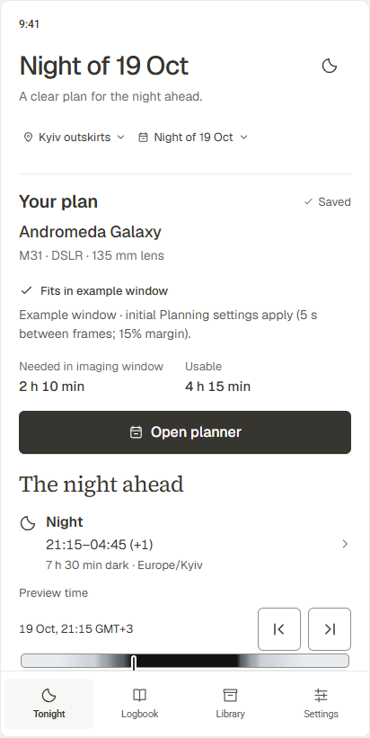
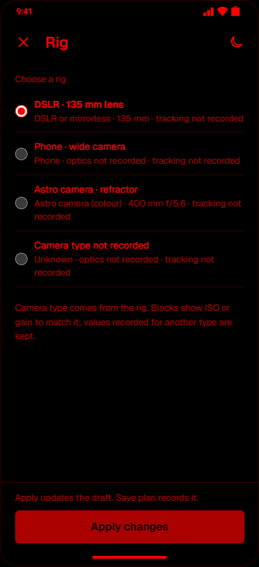
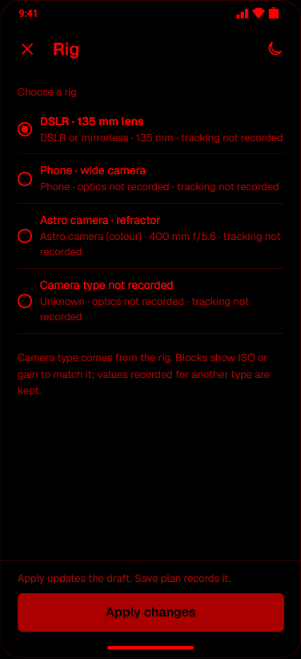
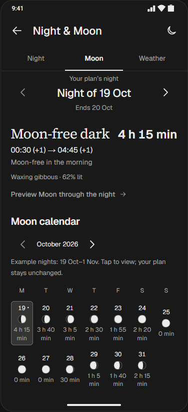
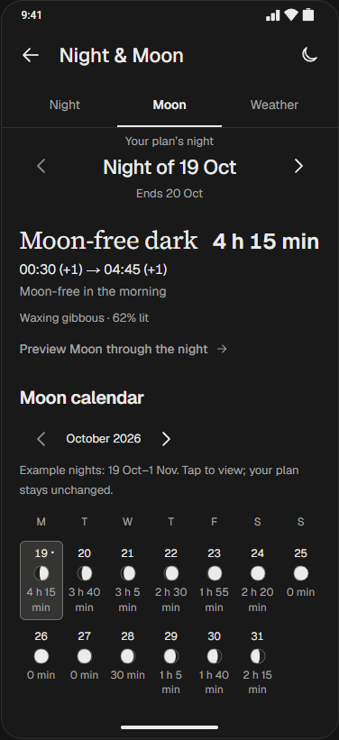

Порівняння до/після цього пакета. Однакові моделі, приклади даних, ширини телефону й висота контейнера 820 px. Це браузерний кандидат для вашого приймання.
Зафіксовані SHA-256 вихідних файлів · Походження порівняння







